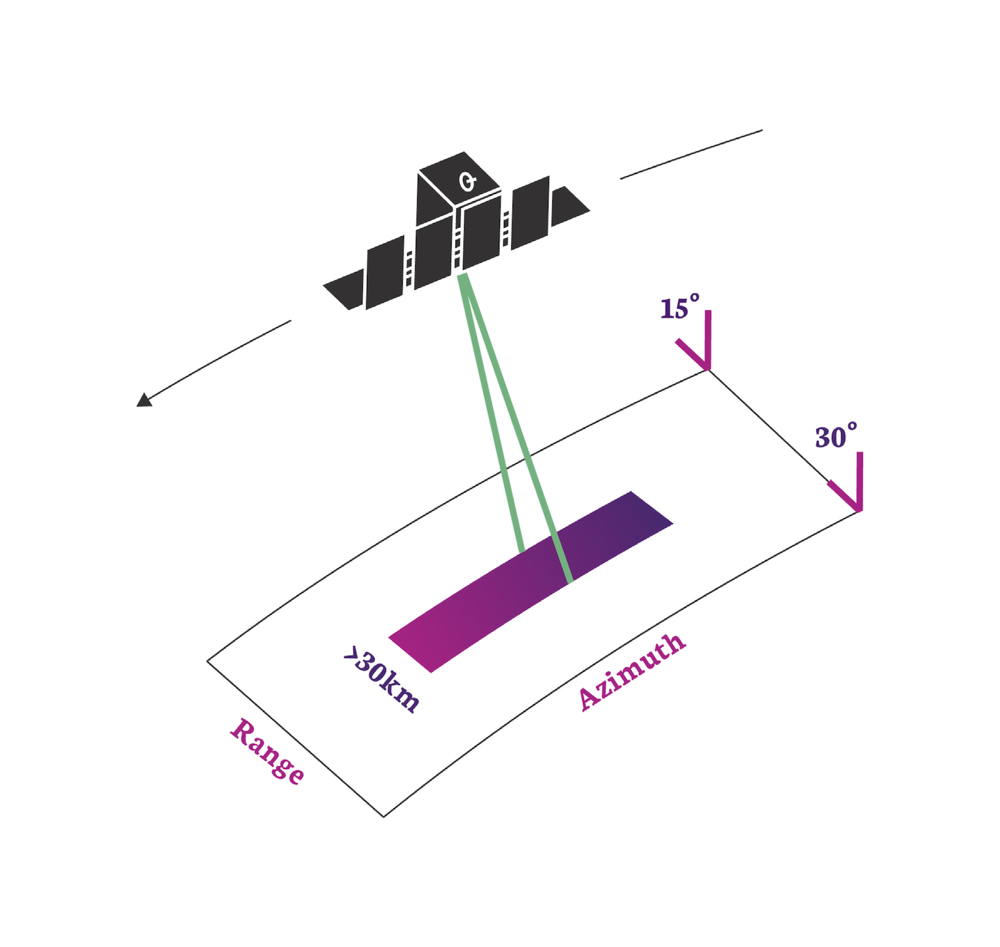
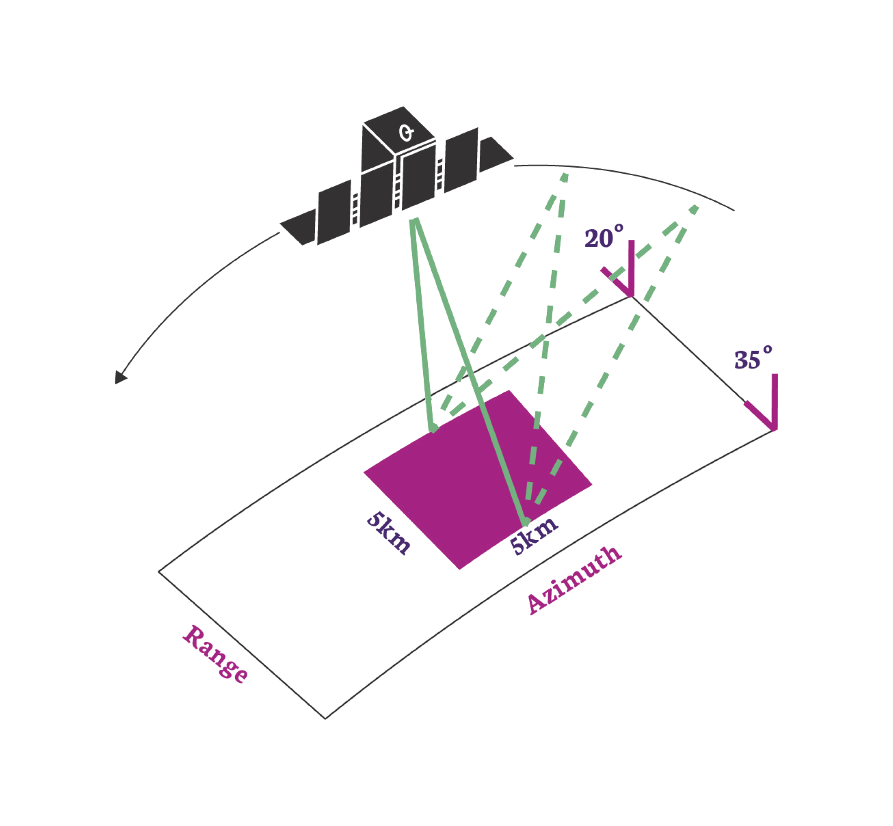

ICEYE PRODUCTS
Product Types
There are two basic forms of ICEYE images: complex images in the slant plane and amplitude images projected to the ground surface. Details about the formats of these products are provided in 'SAR Data Formatting Options'.
Info
The section "What is SAR?" provides a review of the technologies mentioned here.
Complex Images
SAR complex images contain pixels that have both amplitude and phase values. They are produced at full resolution and are projected in the inclined direction of illumination, called the slant plane. Since complex images retain phase information, they can be used to produce numerous SAR products like coherent change images and precise surface motion measurements.
Info
Complex Images are used for 'interferometric SAR' such as the formation of digital elevation models (DEM), land subsidence monitoring or coherent change analysis.
Amplitude Images
These are the familiar SAR gray-scale images with amplitude-only pixels. They are “multi-looked” to reduce the grainy effect of speckle, at the cost of slightly lower resolution. Amplitude images are projected to the ground surface and can be oriented with respect to the sensor or produced on an ellipsoid-based map projection. ICEYE produces amplitude images in the natural range-azimuth sensor orientation because they offer the most flexibility in exploitation. To be consistent with conventional terminology, these sensor-oriented images are called Ground Range Detected (GRD). This term may change in the future to be something more meaningful.
Info
Amplitude images are most useful for rapid observation of a location regardless of lighting or weather conditions.
Types of SAR Collection
Our first set of satellites operate in one of two primary imaging modes called Strip Mode and Spot Mode. These are available in both right and left-looking configurations. The design flexibility of our satellites allows their imaging modes to be continually evolved. We will be adding more modes, and more flexible illumination patterns, in future versions. A recent addition is Scan Mode, which is a wide-area imaging capability that uses electronic beam steering. A summary of the imaging modes is listed in An Overview of SAR Imaging.
Strip Mode
 In this mode the ground swath is illuminated with a continuous sequence of pulses while the antenna beam is fixed in its orientation. The beam is pointed off to the side of the satellite at an angle broadside to the satellite flight path. This results in a long image strip parallel to the flight direction.
ICEYE standard Strip products have a ground resolution of 3m in range and azimuth and cover an area of 30km (range) by 50km (azimuth). The strip length can be tailored up to a length of 500 km, in increments of 50 km.
Info
Having a wide area and a moderate resolution, Strip images are useful for 'situational awareness'. They allow a user to quickly asses what is occusing in region. They are particularly useful for tasks such as deforestation monitoring, or iceberg / glacier monitoring. They are also our 'first responder' product in times of natural disaster to assess the impact of a flood, earthquake or volcano.
Spot Mode
 In Spot mode the radar beam is steered to illuminate a fixed point. This increases the illumination time and therefore increases the length of the synthetic aperture and improves azimuth resolution. ICEYE Generation2 satellites have a maximum 300 MHz pulse bandwidth in Spot Mode to achieve a 0.5m slant range resolution (here is an explanation of where this comes from.). This will improve to 600 MHz for our Generation3 version.
ICEYE's standard Spot collection covers an area of 5km x 5km with a 1 m ground resolution for multi-looked amplitude images. These are formed from 4 independent looks to suppress speckle and increase image quality.
Alternatively, customers can request an extended area spot image. This uses a slightly modified spot collection (sometimes called sliding spot) in which the beam is allowed to slide just a bit. This increases collection area and trades the number of looks to preserve resolution for amplitude images. The Spot extended area collection has a scene size of 15km x 15km at 1m ground resolution with no multi-looking applied.
Note
Having the finest resolution, Spot images are useful to more detailed investigation of an area. They are used primarily to discriminate between different types of object such as boats or ships, different aircraft, or different types of building or infrastructure. The additional resolution also helps with coherence analysis techniques such as INSAR.
Scan Mode
This mode uses the phased array antenna to create multiple beams in the elevation direction. This beam steering illuminates a wide area via multiple adjacent strips, but it means that points on the ground are not illuminated for as long as conventional Strip Mode. This reduces the resolution of a Scan product.
In conventional scan mode, ground points are illuminated by different parts of the radar beam resulting in brighter and darker regions in the image. We compensate for this in our scan by also steering the radar beam sideways during each burst of radar pulses. This improves image quality. This technique is called Terrain Observation by Progressive Scans (TOPS or TOPSAR1). Our Scan product produces imagery that covers an area of 100km x 100km with a resolution better than 15m. The length of a Scan product can be increased to 300km.
Note
Having the largest area coverage and a modest resolution, Scan images are highly suited to wide area surveillance and mapping projects. Being able to operate in all weather and lighting conditions, they provide an excellent opportunity to images the oceans and to detect ships and monitor shipping lanes.
References
-
F. De Zan and A. Monti Guarnieri. Topsar: terrain observation by progressive scans. IEEE Transactions on Geoscience and Remote Sensing, 44\(9\):2352–2360, 2006. doi:10.1109/TGRS.2006.873853. ↩